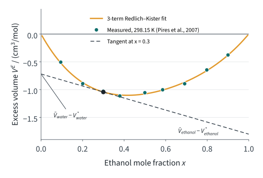
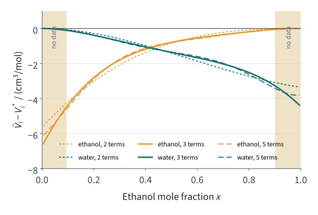
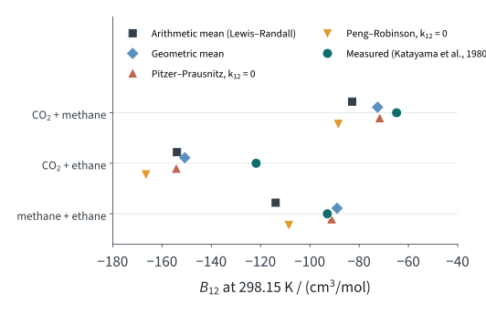
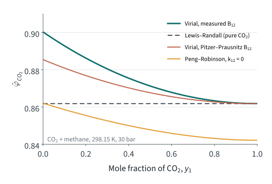
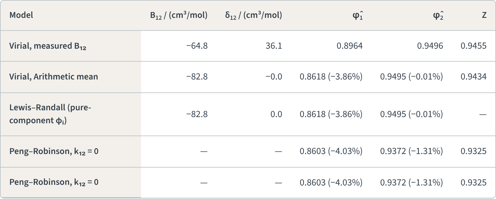

Session P5 of 7 · before the midterm · 180 minutes
Before the midterm · 7 sessions P1 · Framework P2 · PVT and equations of state P3 · Residual properties P4 · Pure-component equilibrium and fugacity P5 · Mixtures P6 · Excess properties and activity P7 · Choosing a property model
After the midterm · 7 sessions 1 · VLE and flash 2 · Experimental VLE 3 · Liquid stability and LLE 4 · Solids and adsorption 5 · Chemical equilibrium 6 · Electrochemical equilibrium 7 · Choosing a model from evidence
P1–P4 treated pure fluids. Every separation and reaction involves mixtures. Today: what one component contributes to a mixture (partial molar properties), the constraint that links them (Gibbs–Duhem), and the fugacity of a component in a gas mixture, with the ideal solution as the reference.

Mix 50 mL of ethanol with 50 mL of water at 298.15 K. The measured densities give 96.6 mL.
The excess volume is negative everywhere, down to −1.1 cm³/mol. A component’s contribution to a mixture is not its pure-component property.
The same holds for fugacity: 2% CO₂ in methane at 60 bar has a fugacity coefficient 8% away from that of pure CO₂ at the same T and P.
Densities: Pires et al., J. Chem. Eng. Data 52 (2007) 1240. Cross virial coefficient: Katayama et al., J. Chem. Eng. Jpn. 13 (1980) 257. Lab P5.
Where you show it
0–30 Essential concepts partial molar, Gibbs–Duhem, f̂ᵢ
30–40 Activity 1 V̄ᵢ and φ̂ᵢ by hand
40–60 Demo Lab P5
60–70 Break
70–140 Activity 2 · pair investigation fit order, B₁₂, Lewis–Randall
140–180 Discussion and exit ticket answer the session question
Session question What does one component contribute to the properties of a mixture, and when can we replace that contribution by its pure-component value?
Before class · 20 min Read the Session P5 pre-class note and answer its three questions.
After class · 40 min Finish Lab P5: both parts for the three gas pairs, then A–C in the Graduate view. Submit the study file with your name and ID.
Studying on your own? Follow the same order. Turn on narration or captions at the bottom left, and pause at each activity slide.
For any extensive property M = nMm(T, P, x):
\bar M_i=\Big(\frac{\partial (nM)}{\partial n_i}\Big)_{T,P,n_{j\neq i}},\qquad M=\sum_i x_i\bar M_i
For a binary, the tangent-intercept rule:
\bar M_1=M+x_2\frac{dM}{dx_1},\qquad \bar M_2=M-x_1\frac{dM}{dx_1}
\bar G_i = \mu_i: the chemical potential is the partial molar Gibbs energy.
A partial molar property is a derivative of the mixture property. It is not the property of one molecule and can even be negative.
Ethanol + water, 298.15 K, x = 0.5 V̄ethanol = 57.88 cm³/mol (pure 58.68); V̄water = 16.71 (pure 18.07).
Mixing properties: ΔM = M − ΣxiMi* = Σxi(M̄i − Mi*). Here ΔV = VE because an ideal solution has ΔV = 0.

At fixed T and P:
\sum_i x_i\,d\bar M_i=0\qquad\text{(binary: } x_1d\bar M_1=-x_2d\bar M_2)
When one partial molar property rises, the other falls.
What the densities fix V̄ at x = 0.5 varies by 0.05 cm³/mol across 2–5 terms. V̄∞ of ethanol in water varies by 1.1 cm³/mol: below x = 0.095 there are no data.
For μi this is the test of measured activity coefficients in Session 2 after the midterm.
Extending P4 to component i of a mixture:
d\mu_i=RT\,d\ln\hat f_i\quad(T\text{ fixed}),\qquad \hat\varphi_i=\frac{\hat f_i}{y_iP}
\ln\hat\varphi_i=\int_0^P(\bar Z_i-1)\frac{dP}{P},\qquad \bar Z_i=\frac{P\bar V_i}{RT}
Phase equilibrium of a mixture: f̂iα = f̂iβ for every component.
ln φ̂i is a partial molar quantity: ln φ̂i = ∂(nGR/RT)/∂ni. So Σyi ln φ̂i = GR/RT of the mixture.
φ̂i → φi(pure) as yi → 1, and φ̂i → 1 as P → 0.
Session 1 after the midterm uses f̂iV = yiφ̂iP on the vapor side of VLE.
Ideal solution: each component’s fugacity is proportional to its mole fraction:
\hat f_i^{id}=x_if_i\qquad\Rightarrow\qquad\hat\varphi_i^{id}=\varphi_i
Then ΔVmix = 0, ΔHmix = 0 and
\Delta G_{mix}=RT\sum_ix_i\ln x_i,\quad\Delta S_{mix}=-R\sum_ix_i\ln x_i
fi is the fugacity of pure i at the T and P of the mixture. The rule f̂i = xifi is the Lewis–Randall rule.
It ignores the difference between unlike and like interactions. It is exact for mixtures of similar molecules, an ideal gas, and any component as xi → 1.
P6 measures the departure of a liquid from it with γi = f̂i/(xifi).

B_{mix}=\sum_i\sum_jy_iy_jB_{ij}
\ln\hat\varphi_1=\frac{P}{RT}\big(B_{11}+y_2^2\delta_{12}\big),\quad\delta_{12}=2B_{12}-B_{11}-B_{22}
Lewis–Randall ⇔ δ12 = 0 ⇔ B12 = (B11 + B22)/2.
Measured, 298.15 K CO₂ + methane: B12 = −64.8 against the mean −82.8, so δ12 = +36.1 cm³/mol.
van der Waals one-fluid mixing rules: a=\sum_i\sum_jy_iy_j\sqrt{a_ia_j}\,(1-k_{ij}), \;b=\sum_iy_ib_i. For Peng–Robinson:
\ln\hat\varphi_i=\frac{b_i}{b}(Z-1)-\ln(Z-B)-\frac{A}{2\sqrt2B}\Big(\frac{2\sum_jy_ja_{ij}}{a}-\frac{b_i}{b}\Big)\ln\frac{Z+(1+\sqrt2)B}{Z+(1-\sqrt2)B}
k12 that reproduces the measured B12
| Pair | Pitzer–Prausnitz | Peng–Robinson |
|---|---|---|
| CO₂ + methane | 0.039 | 0.205 |
| CO₂ + ethane | 0.096 | 0.223 |
| methane + ethane | −0.008 | 0.110 |
kij corrects the geometric mean for unlike attraction. One number per pair, usually fitted to mixture data.
PR’s pure B are too negative (P2), so the k12 that matches B12 must also correct them. A k12 fitted to B12 is not the k12 fitted to VLE.

The error of Lewis–Randall is (P/RT)y2²δ12 in ln φ̂1: largest for a dilute component at high pressure.
2% CO₂ in methane, 298.15 K Lewis–Randall is 4.1% low at 30 bar and 8.0% low at 60 bar.
At y1 → 1 every model meets pure CO₂. Combining rules with k12 = 0 inherit the error of the mean.
Activity 1 · 10 minutes · alone, then with a partner
On your own: pause here and write your answer. In place of a partner, compare it with the next slide and write one sentence on any difference and its cause.
VE = 0.25 A0 = −1.078 cm³/mol
dVE/dx1 = 0.25 × 2A1 = 0.568
V̄1 − V1* = VE + x2dVE/dx1 = −0.794
V̄2 − V2* = VE − x1dVE/dx1 = −1.362
(b) CO₂ in methane, 30 bar
δ12 = 2(−64.8) + 122.9 + 42.8 = +36.1 cm³/mol
P/RT = 1.210 × 10⁻³ mol/cm³
ln φ̂1 = 1.210 × 10⁻³ × (−122.9 + 0.9025 × 36.1) = −0.1093
φ̂1 = 0.896; Lewis–Randall exp(B11P/RT) = 0.862

Lab P5 should report 3 terms: V̄ at x = 0.5: 57.884, 16.706 cm³/mol · V̄∞ ethanol 51.96 · CO₂ + methane, y₁ = 0.05: φ̂₁ 0.8964, Lewis–Randall 0.8618
Reading V̄i as the size of molecule i. It is a derivative of the mixture volume. V̄ of ethanol at infinite dilution in water is about 6 cm³/mol smaller than pure ethanol.
Reporting V̄∞ from a fit as data. The densities end at x = 0.095. Across 2–5 terms V̄∞ moves by 1.1 cm³/mol.
Lewis–Randall for a dilute gas component. For 2% CO₂ in methane at 60 bar it is 8% low. It needs δ12P/RT ≪ 1.
Using a kij outside the data it was fitted to. PR needs k12 ≈ 0.2 to match B12 of CO₂ + methane; that value is not a VLE parameter.
Next Activity 2: a pair investigation in Lab P5, 70 minutes.
Before you leave your seat, check that Lab P5 opens on your device and that the first case is saved.
Activity 2 · 70 minutes · in pairs: one drives Lab P5, one checks by hand, then swap
20 min · partial molar volumes Lab P5 A: fits with 1–5 terms. Which numbers are fixed by the data, and which by the form of the fit?
15 min · cross coefficients Lab P5 B: the three pairs against four rules. Find the k12 each pair needs, and explain the pattern for CO₂.
20 min · component fugacity Lab P5 C for CO₂ + methane: where is Lewis–Randall within 1%? Repeat with your k12 in PR.
15 min · explain Two sentences with numbers answering the session question. Download the study file with your names and IDs.
On your own: do both roles yourself: work in Lab P5, then check one partial molar volume by hand. Pause the slides while you work; the next slide lists what to hand in.
Graduate extension Lab P5 E: a Redlich–Kister fit written with an AI assistant, checked against the lab.
Check your results
| Terms | RMS / (cm³/mol) | V̄ at x = 0.5 | V̄∞ ethanol |
|---|---|---|---|
| 1 | 0.093 | 57.55, 16.94 | 54.17 |
| 2 | 0.043 | 57.84, 16.66 | 53.05 |
| 3 | 0.017 | 57.88, 16.71 | 51.96 |
| 5 | 0.015 | 57.89, 16.72 | 52.51 |
B12 rules with k12 = 0: 11–37% too negative for the CO₂ pairs; Pitzer–Prausnitz within 2% for methane + ethane.
Discuss in pairs, then with the class. On your own: write two or three sentences for each question.
Partial molar M̄i = ∂(nM)/∂ni; M = ΣxiM̄i; tangent-intercept; ΣxidM̄i = 0. μi = Ḡi.
Component fugacity dμi = RT d ln f̂i; φ̂i = f̂i/(yiP). Virial: one cross coefficient B12. Cubics: mixing rules with kij.
Reference Ideal solution: f̂i = xifi (Lewis–Randall). Fails for a dilute component with δ12P/RT not small: 4–8% for CO₂ in methane.
Session question: a component contributes its partial molar property, which differs from the pure value whenever unlike interactions differ from like ones. Ethanol + water contract by 3.4%; for 2% CO₂ in methane at 60 bar the Lewis–Randall φ̂ is 8% low.
Next session P6: excess properties and activity coefficients, the liquid-phase departure from the ideal solution.
Exit ticket and feedback · alone · 5 minutes · anonymous
For CO₂ + methane, B12 = −64.8 cm³/mol while (B11 + B22)/2 = −82.8 cm³/mol. Will the Lewis–Randall rule overestimate or underestimate the fugacity of dilute CO₂, and why does the error grow with pressure?
Scan the code or open the link. The same form asks three short questions about today: pace, confidence and whether the lab worked.
No name or student ID is recorded. Wait for “Response received.”
Hand in · this week Your Lab P5 study file with the three gas pairs, A–C, name and student ID. Upload it to myCourseVille, in the assignment for that lab.
Prepare · Session P6 Read the Session P6 pre-class note. About 20 minutes.
Optional · graduate Lab P5 E: a Redlich–Kister fit written with an AI assistant, checked against the lab.
Open Lab P5 in the Graduate view →
Starts at 4. Investigate what mixture data can support. A: Compare fit orders. B: Compare the rules. C: Map the component fugacity.